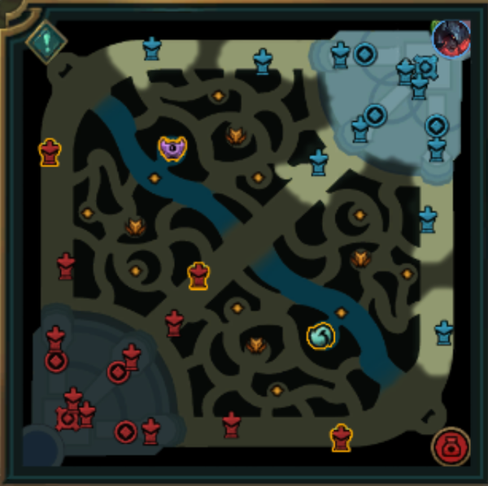

Pasos para jugar mejor
- Farmear de manera constante durante la fase de líneas.
- Mirar el minimapa cada pocos segundos.
- Controlar objetivos como dragones, torres y barón.
- Evitar pelear sin visión o sin información del rival.
Una guía web para mejorar tu experiencia, organización y rendimiento en League of Legends.
Este sitio esta creado por un jugador constande de League of legends para jugadores que quieren aprender a organizar mejor sus partidas, mejorar su toma de decisiones y conocer herramientas útiles para progresar dentro del juego.
League of Legends no solo requiere reflejos, sino también estrategia, paciencia y práctica constante. Por eso, esta guía reúne consejos, recursos y elementos básicos que pueden ayudar a cualquier jugador a avanzar de forma más inteligente.

Si querés volver rápido al principio del sitio, hacé clic en este enlace: Volver al inicio.
Existen distintas plataformas y recursos que te ayudan a analizar partidas, revisar estadísticas y aprender nuevas estrategias.
| Recursos de apoyo para mejorar | |
|---|---|
| Herramienta | Función |
| OP.GG | Permite ver estadísticas generales del jugador. |
| Sirve para revisar historial de partidas y rendimiento. | |
| Porofessor | Ofrece información en tiempo real antes y durante las partidas. |
| YouTube | Ayuda a aprender builds, mecánicas y guías de campeones. |

Además de leer guías, también es útil mirar videos para aprender posicionamiento, toma de decisiones y manejo de campeones.
Si querés recomendar una guía, dejar una sugerencia o compartir tu experiencia, podés completar este formulario.